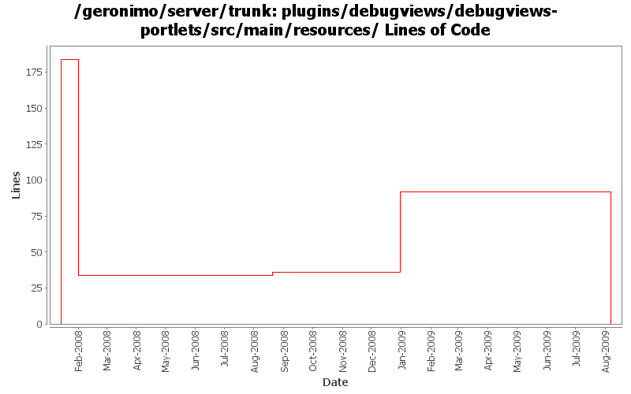

[root]/plugins/debugviews/debugviews-portlets/src/main/resources

| Author | Changes | Lines of Code | Lines per Change |
|---|---|---|---|
| Totals | 19 (100.0%) | 280 (100.0%) | 14.7 |
| djencks | 4 (21.1%) | 184 (65.7%) | 46.0 |
| dwoods | 5 (26.3%) | 93 (33.2%) | 18.6 |
| linsun | 2 (10.5%) | 2 (0.7%) | 1.0 |
| gawor | 3 (15.8%) | 1 (0.4%) | 0.3 |
| xuhaihong | 5 (26.3%) | 0 (0.0%) | 0.0 |
GERONIMO-4763 i18n properties files should be converted to ascii at build time. (Patch from Shawn Jiang)
0 lines of code changed in 5 files:
some spell checking
1 lines of code changed in 1 file:
GERONIMO-4507 Admin console should honor the priority of user agent's language setting. Applied patch from Gang Yin.
0 lines of code changed in 1 file:
GERONIMO-4474 Additional localization patches from Gang Yin.
2 lines of code changed in 2 files:
GERONIMO-4474 Pull out the text in the JSP files to resource bundle files. Patches provided by Gang Yin.
91 lines of code changed in 2 files:
GERONIMO-4235 - JNDI search should be case-insensitive by default
2 lines of code changed in 2 files:
remove duplicated content and fix spelling mistakes
0 lines of code changed in 2 files:
GERONIMO-1775 2nd internationalization patch from YunFeng Ma, with some spelling corrections
0 lines of code changed in 2 files:
GERONIMO-1775 apply 2nd patch. Console-testsuite passes for me and I didn't see any problems
184 lines of code changed in 2 files: